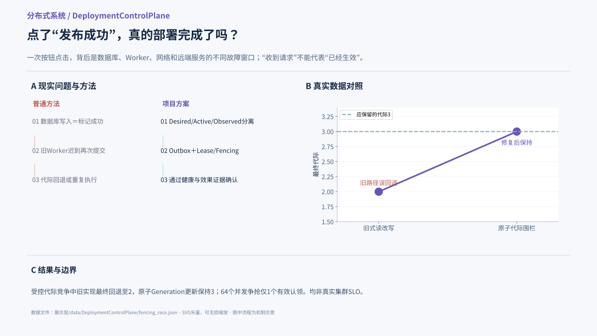

分布式系统 / DeploymentControlPlane
点了“发布成功”，真的部署完成了吗？
一次按钮点击，背后是数据库、Worker、网络和远端服务的不同故障窗口；“收到请求”不能代表“已经生效”。
01 / 为什么这个问题值得解决
Worker重启后重试，旧执行者可能覆盖新状态；重复事件会造成额外副作用。
02 / 看见差别：普通方法如何失效，项目如何介入
普通方案
普通方法／风险路径
风险所在：关键状态可能被误认
阶段 1数据库写入＝标记成功
阶段 2旧Worker迟到再次提交
阶段 3代际回退或重复执行
项目方案
有证据的项目方法
解决方式：明确条件，留下验证证据
阶段 1Desired/Active/Observed分离
阶段 2Outbox＋Lease/Fencing
阶段 3通过健康与效果证据确认
阶段 1 / 3
按钮显示成功，不代表服务真正启动
普通方法：风险在哪里旧做法：API返回200，页面就认为部署完成。
项目方法：具体改变什么项目方法：分别追踪期望状态、执行状态和实际观察状态，只有核验后才显示相应结果。
过程为机制示意，帮助非技术读者理解不同决策逻辑；不是未经测量的真实系统运行轨迹。
03 / 技术细节与证据放在同一个画面

2 → 3
受控竞态中的正确代际
受控代际竞争中旧实现最终回退至2，原子Generation更新保持3；64个并发争抢仅1个有效认领。均非真实集群SLO。
受控代际竞争中旧实现最终回退至2，原子Generation更新保持3；64个并发争抢仅1个有效认领。均非真实集群SLO。
原始数据：DeploymentControlPlane/fencing_race.json。图像采用SVG矢量格式，可放大用于演示和阅读。基线与结论均限定于数据文件对应的实验条件。